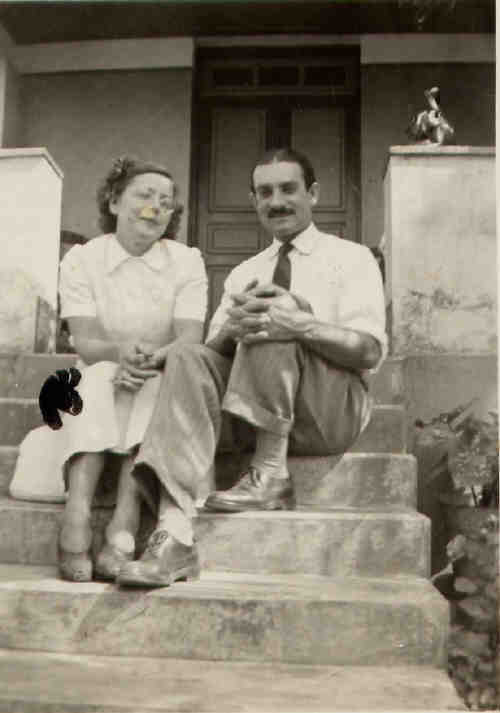
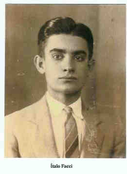

Italo Facci
- Nascido em: 2 Jan 1911, Vila Mariana Sp-Sp
- Casamento: Constância Rodrigues Martins em 28 Mar 1937 em Catanduva/Sp
- Falecido: 30 Jun 1980 com 69 anos de idade

 Notas Gerais: Notas Gerais:
Nasceu em 02-01-1911 no bairro de Vila Mariana SP-SP e faleceu 30-06-1980.
Casou em Catanduva em 28-03-1937 com Constância Rodrigues Martins nascida em
20-05-1912 em dois Córregos (SP), e falecida em 27-03-1969.
Constância era filha de José Rodrigues Martins (* 1866 em Ponte Vedras - Espanha) e Isaltina Batista.
Eventos notáveis em Sua vida foram:

• fotos: constância e ítalo - rua Sergipe.

• fotos: Petrellafl138_Italo_Facci.
Italo casad[:o::a] Constância Rodrigues Martins, filha de José Rodrigues Martins e Isaltina Batista, em 28 Mar 1937 em Catanduva/Sp. (Constância Rodrigues Martins nasceu em em 20 Mai 1912 em Dois Córregos - Sp e faleceu em 27 Mar 1969.)
|


(Clique na Foto para vê-la no Tamanho Original)")